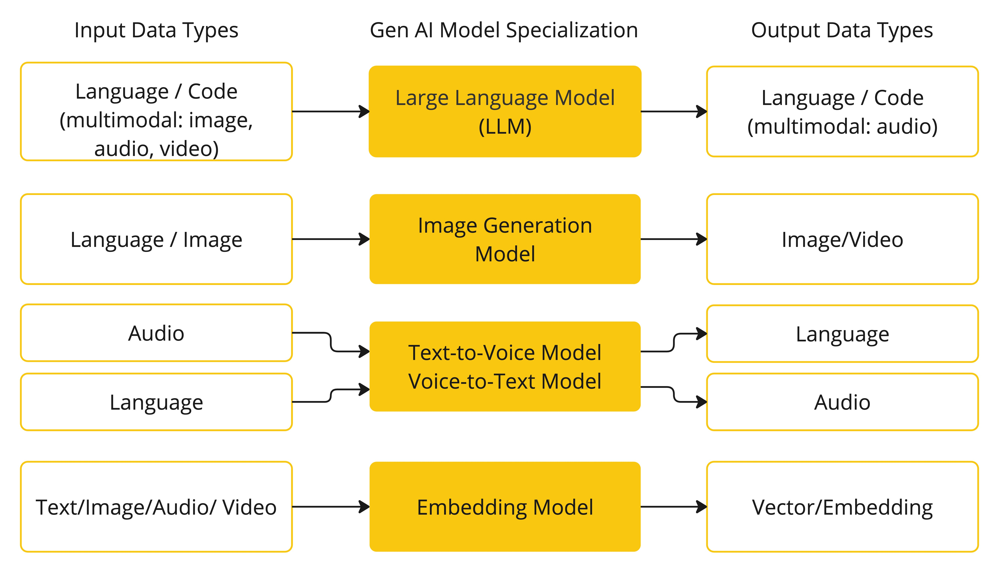
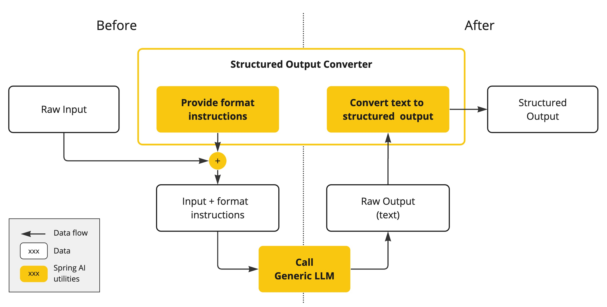
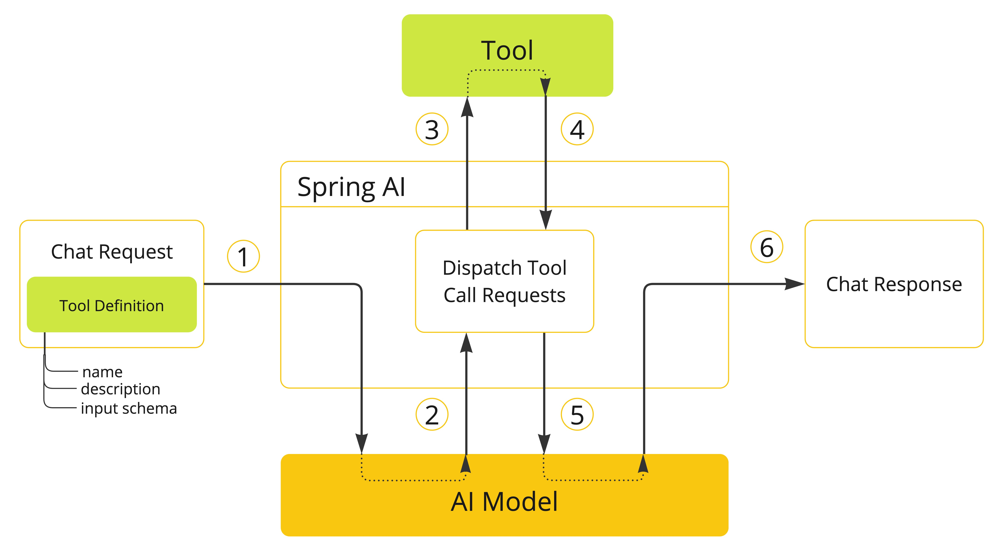

人工智能概念 #
本节描述Spring AI使用的核心概念。我们建议仔细阅读它，以了解Spring AI是如何实现的。
型号 #
人工智能模型是设计用于处理和生成信息的算法，通常模仿人类的认知功能。通过从大型数据集学习模式和见解，这些模型可以做出预测、文本、图像或其他输出，增强跨行业的各种应用。 有许多不同类型的人工智能模型，每种模型都适用于特定的用例。虽然ChatGPT及其生成人工智能功能通过文本输入和输出吸引了用户，但许多模型和公司提供了不同的输入和输出。在ChatGPT之前，许多人都对文本到图像的生成模型（如Midtrivel和稳定扩散）着迷。 下表根据输入和输出类型对几个模型进行了分类：  Spring AI目前支持将输入和输出处理为语言、图像和音频的模型。上一个表中的最后一行接受文本作为输入，输出数字，更常见的是嵌入文本，并表示AI模型中使用的内部数据结构。Spring AI支持嵌入，以支持更高级的用例。 将GPT等模型区分开来的是它们的预训练性质，如GPT聊天生成预训练变压器中的“P”所示。此预训练功能将AI转换为一般开发人员工具，不需要广泛的机器学习或模型训练背景。
提示 #
提示是基于语言的输入的基础，指导人工智能模型产生特定的输出。对于熟悉ChatGPT的人来说，提示符可能看起来仅仅是输入到发送到API的对话框中的文本。然而，它包含的远不止这些。在许多AI模型中，提示的文本不仅仅是简单的字符串。 ChatGPT的API在提示中有多个文本输入，每个文本输入都被分配了一个角色。例如，有一个系统角色，它告诉模型如何行为，并设置交互的上下文。还有用户角色，通常是来自用户的输入。 制作有效的提示既是一门艺术，也是一门科学。ChatGPT是为人类对话而设计的。这与使用SQL之类的东西来“提问”有很大的不同。一个人必须与人工智能模型进行沟通，就像与另一个人交谈一样。 这种交互风格的重要性是如此之大，以至于术语“即时工程”已经成为自己的学科。有一组新兴的技术可以提高提示的有效性。在创建提示符方面投入时间可以显著提高结果输出。 共享提示已成为一种公共实践，并且正在对此主题进行积极的学术研究。作为一个例子，创建一个有效的提示可能是多么违反直觉（例如，与SQL对比），最近的一篇研究论文发现，你可以使用的最有效的提示之一是从短语“深呼吸，一步一步地工作”开始的。这应该会告诉你为什么语言如此重要。我们还没有完全理解如何最有效地使用该技术的先前迭代，如ChatGPT 3.5，更不用说正在开发的新版本了。
提示模板 #
创建有效的提示涉及建立请求的上下文，并用特定于用户输入的值替换请求的部分。 该过程使用传统的基于文本的模板引擎来快速创建和管理。Spring AI为此使用OSS库StringTemplate。 例如，考虑简单的提示模板：
Tell me a {adjective} joke about {content}.
在SpringAI中，提示模板可以比作SpringMVC架构中的“视图”。模型对象，通常是java.util。Map，用于填充模板中的占位符。“渲染”字符串成为提供给AI模型的提示的内容。 发送到模型的提示的特定数据格式具有相当大的可变性。提示符最初是简单的字符串，现在已经发展到包括多个消息，其中每个消息中的每个字符串表示模型的不同角色。
预埋件 #
嵌入是文本、图像或视频的数字表示，用于捕获输入之间的关系。
嵌入的工作原理是将文本、图像和视频转换为浮点数数组，称为向量。这些向量旨在捕获文本、图像和视频的含义。嵌入数组的长度称为向量的维数。
通过计算两段文本的向量表示之间的数字距离，应用程序可以确定用于生成嵌入向量的对象之间的相似性。
 作为一名探索人工智能的Java开发人员，不需要理解复杂的数学理论或这些向量表示背后的特定实现。基本了解它们在人工智能系统中的作用和功能就足够了，特别是当您将人工智能功能集成到应用程序中时。
嵌入在实际应用中特别相关，如检索增强生成（RAG）模式。它们支持将数据表示为语义空间中的点，这类似于欧几里德几何的2-D空间，但具有更高的维度。这意味着，就像欧几里德几何中平面上的点如何基于它们的坐标来接近或远离一样，在语义空间中，点的接近反映了意义上的相似性。关于相似主题的句子在多维空间中的位置更近，就像图上彼此靠近的点。这种接近性有助于文本分类、语义搜索甚至产品推荐等任务，因为它允许人工智能根据相关概念在扩展的语义景观中的“位置”来识别和分组相关概念。
您可以将此语义空间视为向量。
作为一名探索人工智能的Java开发人员，不需要理解复杂的数学理论或这些向量表示背后的特定实现。基本了解它们在人工智能系统中的作用和功能就足够了，特别是当您将人工智能功能集成到应用程序中时。
嵌入在实际应用中特别相关，如检索增强生成（RAG）模式。它们支持将数据表示为语义空间中的点，这类似于欧几里德几何的2-D空间，但具有更高的维度。这意味着，就像欧几里德几何中平面上的点如何基于它们的坐标来接近或远离一样，在语义空间中，点的接近反映了意义上的相似性。关于相似主题的句子在多维空间中的位置更近，就像图上彼此靠近的点。这种接近性有助于文本分类、语义搜索甚至产品推荐等任务，因为它允许人工智能根据相关概念在扩展的语义景观中的“位置”来识别和分组相关概念。
您可以将此语义空间视为向量。
代币 #
代币是人工智能模型工作方式的构建块。在输入时，模型将单词转换为标记。在输出时，它们将标记转换回单词。
在英语中，一个标记大致相当于单词的75%。作为参考，莎士比亚的全部作品，总计约90万字，翻译成约120万个代币。
 也许更重要的是代币=货币。在托管AI模型的上下文中，您的费用由使用的代币数量决定。输入和输出都会影响整个令牌计数。
此外，模型受到令牌限制的影响，这限制了单个API调用中处理的文本量。该阈值通常被称为“上下文窗口”。模型不处理任何超过此限制的文本。
例如，ChatGPT3具有4K代币限制，而GPT4提供不同的选项，如8K、16K和32K。人类的Claude AI模型具有100K代币限额，Meta最近的研究产生了1M代币限额模型。
要使用GPT4总结莎士比亚的作品集，您需要设计软件工程策略来分割数据，并在模型的上下文窗口限制内呈现数据。Spring AI项目可以帮助您完成这项任务。
也许更重要的是代币=货币。在托管AI模型的上下文中，您的费用由使用的代币数量决定。输入和输出都会影响整个令牌计数。
此外，模型受到令牌限制的影响，这限制了单个API调用中处理的文本量。该阈值通常被称为“上下文窗口”。模型不处理任何超过此限制的文本。
例如，ChatGPT3具有4K代币限制，而GPT4提供不同的选项，如8K、16K和32K。人类的Claude AI模型具有100K代币限额，Meta最近的研究产生了1M代币限额模型。
要使用GPT4总结莎士比亚的作品集，您需要设计软件工程策略来分割数据，并在模型的上下文窗口限制内呈现数据。Spring AI项目可以帮助您完成这项任务。
结构化输出 #
AI模型的输出通常以java.lang.String的形式到达，即使您要求以JSON格式返回。它可能是正确的JSON，但不是JSON数据结构。它只是一个字符串。此外，在提示中询问“for JSON”不是100%准确的。
这种复杂性导致出现了一个专门的字段，涉及创建提示以产生预期的输出，然后将结果简单的字符串转换为用于应用程序集成的可用数据结构。

结构化输出转换使用精心编制的提示，通常需要与模型进行多次交互，以实现所需的格式。
将您的数据和API引入人工智能模型 #
如何为人工智能模型配备尚未训练的信息？ 请注意，GPT 3.5/4.0数据集仅扩展到2021年9月。因此，该模型表示，它不知道在该日期之后需要知识的问题的答案。一个有趣的琐事是，该数据集约为650GB。 有三种技术可用于定制人工智能模型以合并您的数据：
- 微调：这种传统的机器学习技术涉及裁剪模型并更改其内部权重。然而，对于机器学习专家来说，这是一个具有挑战性的过程，而对于GPT之类的模型，由于它们的规模，资源消耗非常大。此外，某些型号可能不提供此选项。
- 即时填充：一种更实用的替代方法涉及将数据嵌入到提供给模型的提示中。给定模型的令牌限制，需要技术在模型的上下文窗口中呈现相关数据。这种方法通俗地称为“填充提示符”。Spring AI库帮助您实现基于“填充提示”技术的解决方案，也称为检索增强生成（RAG）。

- 工具调用：该技术允许注册将大型语言模型连接到外部系统的API的工具（用户定义的服务）。SpringAI大大简化了您需要编写的代码，以支持工具调用。
检索增强生成 #
一种称为检索增强生成（RAG）的技术已经出现，以解决将相关数据合并到准确人工智能模型响应提示中的挑战。
该方法涉及批处理样式的编程模型，其中作业从文档中读取非结构化数据，对其进行转换，然后将其写入向量数据库。在高级别上，这是ETL（提取、转换和加载）管道。矢量数据库用于RAG技术的检索部分。
作为将非结构化数据加载到向量数据库的一部分，最重要的转换之一是将原始文档拆分为更小的片段。将原始文档拆分为较小的片段的过程有两个重要步骤：
RAG的下一个阶段是处理用户输入。当用户的问题将由人工智能模型回答时，问题和所有“相似”的文档片段都被放在发送到人工智能模型的提示符中。这就是使用向量数据库的原因。它非常善于发现类似的内容。

- ETL管道提供了有关编排从数据源提取数据并将其存储在结构化向量存储中的流的更多信息，确保数据在传递给AI模型时以最佳格式进行检索。
- ChatClient-RAG解释了如何使用QuestionAnswerAdvisor在应用程序中启用RAG功能。
工具调用 #
大型语言模型（LLM）在训练后被冻结，导致知识过时，并且它们无法访问或修改外部数据。 工具调用机制解决了这些缺点。它允许您将自己的服务注册为工具，以将大型语言模型连接到外部系统的API。这些系统可以为LLM提供实时数据，并代表它们执行数据处理操作。 SpringAI大大简化了您需要编写的代码，以支持工具调用。它为您处理工具调用对话。您可以将工具作为@tool注释方法提供，并在提示选项中提供它，以使其可用于模型。此外，可以在单个提示中定义和引用多个工具。  有关如何将此功能用于不同的AI模型的更多信息，请参阅 工具调用文档。
评估人工智能响应 #
响应用户请求有效评估人工智能系统的输出对于确保最终应用程序的准确性和有用性非常重要。有几种新兴技术能够为此目的使用预先训练的模型本身。
该评估过程涉及分析生成的响应是否与用户的意图和查询的上下文一致。相关性、一致性和事实正确性等指标用于衡量人工智能生成的响应的质量。
一种方法涉及呈现用户的请求和人工智能模型对模型的响应，查询响应是否与提供的数据一致。
此外，利用向量数据库中存储的信息作为补充数据可以加强评估过程，有助于确定响应相关性。
Spring AI项目提供了一个Evaluator API，该API目前允许访问评估模型响应的基本策略。有关更多信息，请遵循评估测试文档。